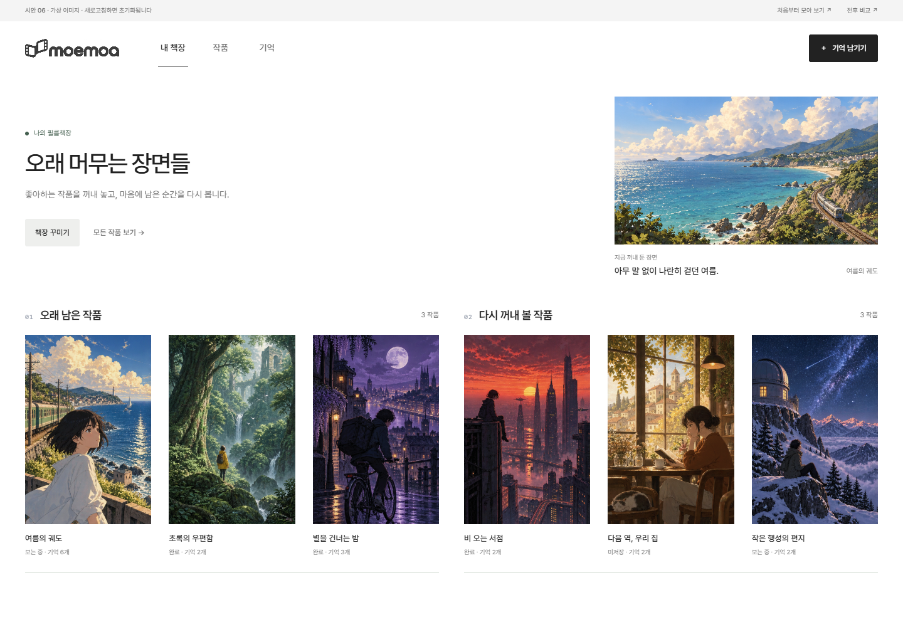
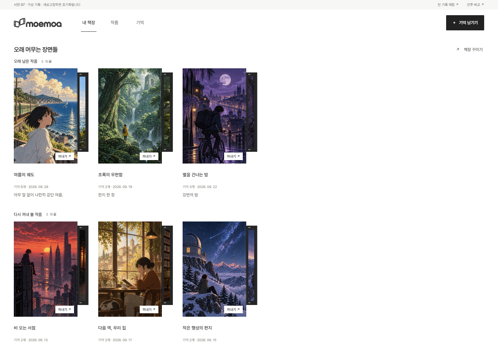
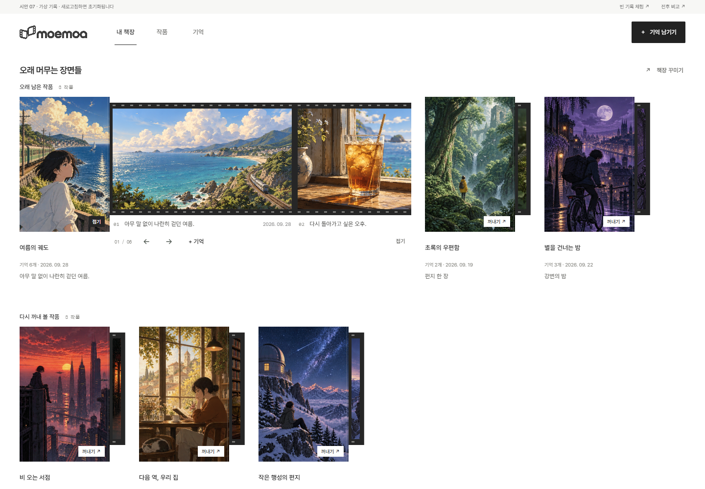
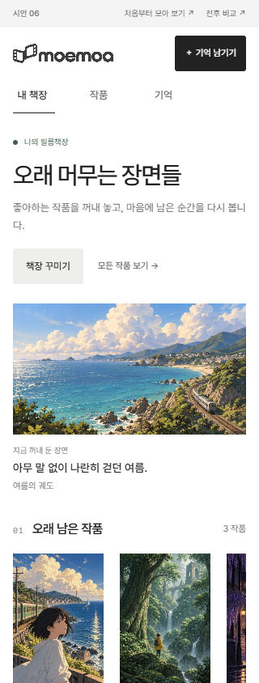
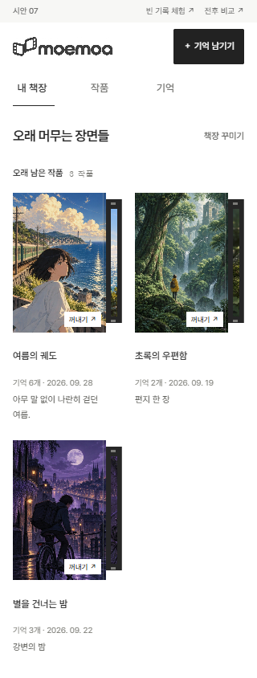
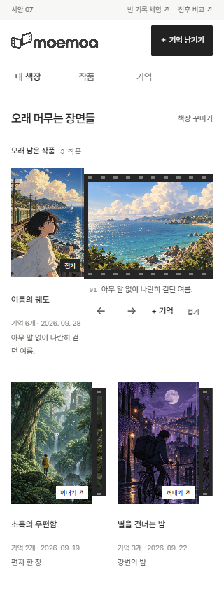

수정 직전 시안 06과 이번 시안 07의 동일 크기 화면입니다. 최초 서비스 디자인과의 비교가 아닙니다.
동일한 가상 기록을 사용했으며, 아래 이미지를 누르면 원래 크기로 볼 수 있습니다.


표지를 눌렀을 때만, 그 커버에서 필름을 펼칩니다.



모바일에서도 커버와 필름은 붙어 있습니다.

- 큰 소개글·설명·대표 이미지 영역을 완전히 제거했습니다. 빈 기억 화면의 큰 예시 이미지도 제거했습니다.
- PC 첫 표지는 화면 위에서 534px → 198px에 시작합니다. 책장 제목은 38px → 18px입니다.
- 자동으로 펼치는 대표 작품은 없습니다. 직접 누른 작품만 열리고, 감상·날짜·그 작품에 기억 추가를 함께 보여줍니다.
- 가상 이미지 기반 시안입니다. 편집과 기록은 새로고침하면 초기화되며 실제 서비스에는 적용하지 않았습니다.